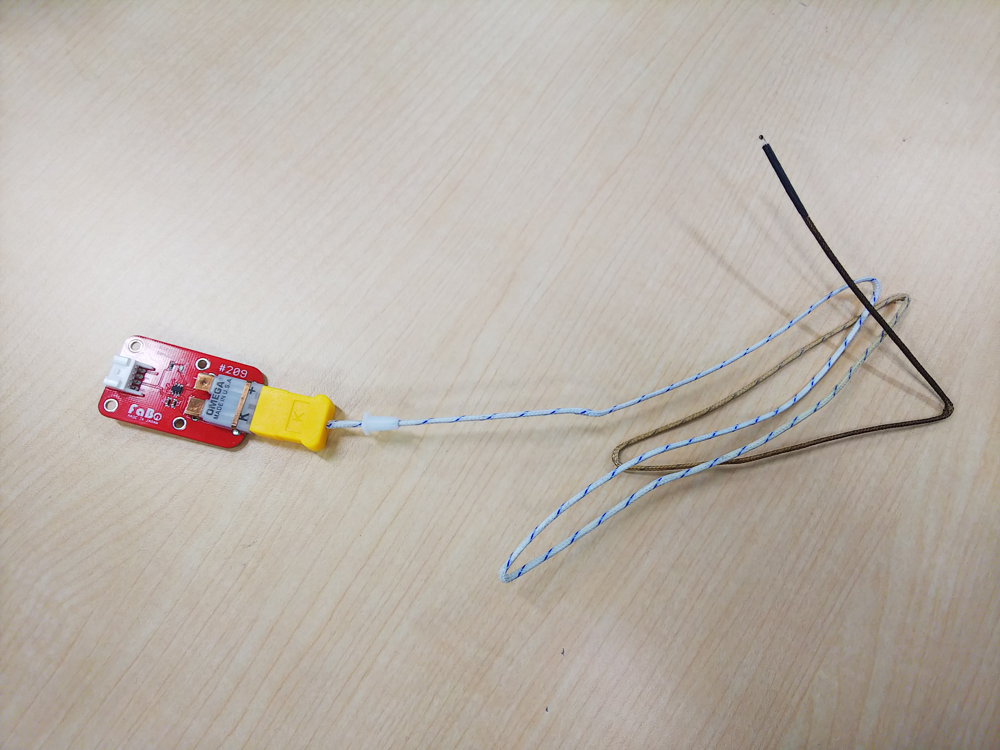
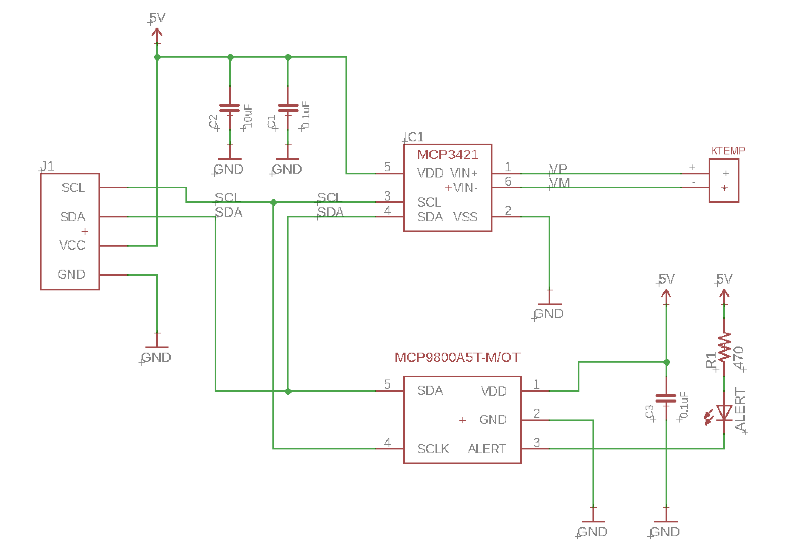
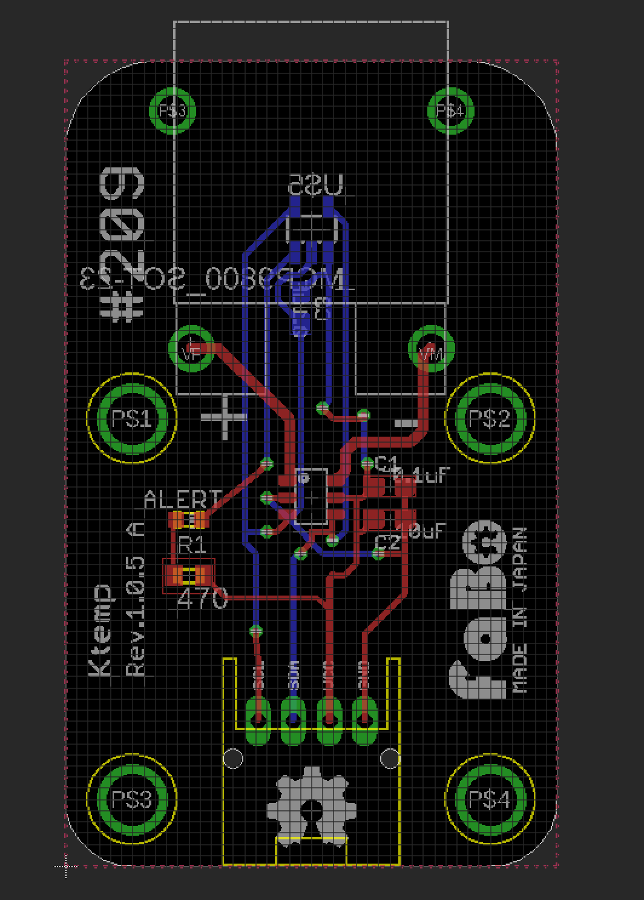

B.3 K熱電対
概要
K熱でリフロー 温度を調べるのに使います。
温度が高すぎると、部品が壊れ、温度が低すぎると半田が溶けません。温度は品質、歩留まりに大きく関わるので重要です。
季節の変わり目など、リフロー の温度も変わりますので小まめな調整が必要となります。
準備
Arduino または、ESP32
Ktemp(FaBo)
K熱電対
測定原理
２種類の金属は繋げて、その接点をホット、コールドとすると温度を与えると起電力発生し、その電位差を測ることで温度が測れます。
その２種類の金属は、＋側 クロメル、ー側 アトメルとし、JIS規格では記号はKとなります。
JISのK熱は、測定範囲は、−２００度〜１０００度までですが、使用するものは、－２００℃～＋１２５０℃になります。
温度差があると、電位差が生じて１度あたりの温度約４０μＶ／℃となります。
しかし、これを１０ビット等のマイコンのA/Dコンバータでは正確には出ないので
８倍増幅、１８ビットで電位差を計測します。
コールド側の温度計は、通常の温度系で十分です。
この2つの温度を合計したものが、温度になります。
Ktemp Brick
FaBo 209 Ktemp

先端が温度計測地点になります。
FaBo 209 Ktempで使用するI2Cセンサ
FaBo 209 Ktemp 回路図

FaBo 209 Ktemp 実装図

ホット側測定
２線式高精度温度センサ マイクロチップ MCP3421 解像度最大１２ビット
MCP3421
温度レンジ 0～1250 °C
コールド側測定
I2Cインターフェース 18ビットA/D コンバータ マイクロチップ MCP9800
MCP9800
温度レンジ -55～125 °C
符合つき１８ビットの正の範囲は、0~131071
基準電圧は2.048Vであるから、
2.048/131071=15.625μV
使用するK熱電対ケーブルの温度係数は40μV
これをゲイン８倍なので
40μV * 8 = 0.00032 μV
15.625 / 0.00032 = 20.48 code/温度
ソースコード
FaBo Ktemp 1.0.5 用ソースコード
1
2
3
4
5
6
7
8
9
10
11
12
13
14
15
16
17
18
19
20
21
22
23
24
25
26
27
28
29
30
31
32
33
34
35
36
37
38
39
40
41
42
43
44
45
46
47
48
49
50
51
52
53
54
55
56
57
58
59
60
61
62
63
64
65
66
67
68
69
70
71
72
73
74
75
76
77
78
79
80
81
82
83
84
85
86
87
88
89
90
91
92
93
94
95
96
97
98
99
100
101
102
103
104
105
106
107
108
109
110
111
112
113
114
115
116
117
118
119
120
121
122
123
124
125
126
127
128
129
130
131
132
133
134
135
136
137
138
139
140
141
142
143
144
145
146
147
148
149
150
151
152
153
154
155
156
157
158
159
160
161
162
163
164 | #include <Wire.h>
//TWI ADDRESS
#define MCP9800_BASE_ADDR 0x4D
#define MCP3421_BASE_ADDR 0x69
#define MCP9800_CONFIG_REG 1
#define MCP9800_ONE_SHOT 0x80
#define MCP9800_ADC_RES_9BITS 0x00
#define MCP9800_ADC_RES_10BITS 0x20
#define MCP9800_ADC_RES_11BITS 0x40
#define MCP9800_ADC_RES_12BITS 0x60
#define MCP9800_FAULT_QUEUE_1 0x00
#define MCP9800_FAULT_QUEUE_2 0x08
#define MCP9800_FAULT_QUEUE_4 0x10
#define MCP9800_FAULT_QUEUE_6 0x18
#define MCP9800_ALERT_POLARITY_HIGH 0x04
#define MCP9800_INTERRUPT_MODE 0x02
#define MCP9800_SHUTDOWN 0x01
#define MCP3421_AMBIENT 0x00
#define MCP3421_Ktep 20.48
uint16_t tick = 0;
char st1[20];
int MCP3421_init(int address, byte sr, byte pga);
int _adr;
byte _sr[]={12,14,16,18};
byte _pga[] = {1,2,4,8};
byte _confWrite;
byte _confRead;
byte _b2,_b3,_b4;
long _l1;
double getLong();
double vin;
double Ktemprature;
double Atemprature;
int readTemp(uint8_t reg);
void writeTempC2(uint8_t reg, int value);
uint8_t readConfig();
void writeConfig(uint8_t value);
float mcp9800_temp(void);
void setup()
{
Serial.begin(9600);
Wire.begin();
writeConfig(MCP9800_ADC_RES_12BITS);
MCP3421_init(MCP3421_BASE_ADDR,3,3);
}
void loop()
{
float Atemprature = mcp9800_temp();
float Ktemprature = getLong();
if (0 == tick){
Serial.print("time,");
Serial.print("HOT,");
Serial.print("COLD,");
Serial.println("KTEMP");
}
Serial.print(tick++);
Serial.print(",");
Serial.print(Ktemprature);
Serial.print(",");
Serial.print(Atemprature);
Serial.print(",");
Serial.println(Ktemprature+Atemprature);
delay(1000);
}
float mcp9800_temp(void)
{
uint8_t config = readConfig();
return readTemp(MCP3421_AMBIENT) / 16.0;
}
int readTemp(uint8_t reg)
{
Wire.beginTransmission(MCP9800_BASE_ADDR);
Wire.write(reg);
Wire.endTransmission();
Wire.requestFrom(MCP9800_BASE_ADDR, (uint8_t)2);
int8_t msb = Wire.read();
uint8_t lsb = Wire.read();
return (msb << 4) + (lsb >> 4);
}
void writeTempC2(uint8_t reg, int value)
{
union intByte_t
{
int i;
byte b[2];
} t;
if (reg > 0x00) { // ambient temp reg is read-only
t.i = value << 7;
Wire.beginTransmission(MCP9800_BASE_ADDR);
Wire.write(reg);
Wire.write(t.b[1]);
Wire.write(t.b[0]);
Wire.endTransmission();
}
}
uint8_t readConfig()
{
Wire.beginTransmission(MCP9800_BASE_ADDR);
Wire.write(MCP9800_CONFIG_REG);
Wire.endTransmission();
Wire.requestFrom(MCP9800_BASE_ADDR, (uint8_t)1);
return Wire.read();
}
void writeConfig(uint8_t value)
{
Wire.beginTransmission(MCP9800_BASE_ADDR);
Wire.write(MCP9800_CONFIG_REG);
Wire.write(value);
Wire.endTransmission();
}
int MCP3421_init(int address, byte sr, byte pga) {
_adr = address;
_sr[sr]=sr & 3;
_pga[pga]=pga & 3;
Wire.beginTransmission(_adr);
_confWrite=0;
_confWrite=_confWrite | ( _sr[sr] << 2 );
_confWrite=_confWrite | _pga[pga];
bitWrite (_confWrite,7,1);
bitWrite (_confWrite,4,1);
Wire.write(_confWrite);
Wire.endTransmission();
}
double getLong() {
if (_sr < 3) {
Wire.requestFrom(_adr, 3);
_b2 = Wire.read();
_b3 = Wire.read();
_confRead = Wire.read();
Wire.endTransmission();
_l1= _b2<<8 +_b3;
} else {
Wire.requestFrom(_adr, 4);
_b2 = Wire.read();
_b3 = Wire.read();
_b4 = Wire.read();
_confRead = Wire.read();
Wire.endTransmission();
_l1= (long)_b3<<8;
_l1=_l1+_b4;
_l1=_l1+0x10000 * _b2;
if ( _b2 > 0x10 ) _l1=_l1 + 0xFF000000;
}
#ifdef DEBUG
sprintf(st1,"ld %ld",_l1);
Serial.println(st1);
#endif
return (double)(_l1 / MCP3421_Ktep);
}
|